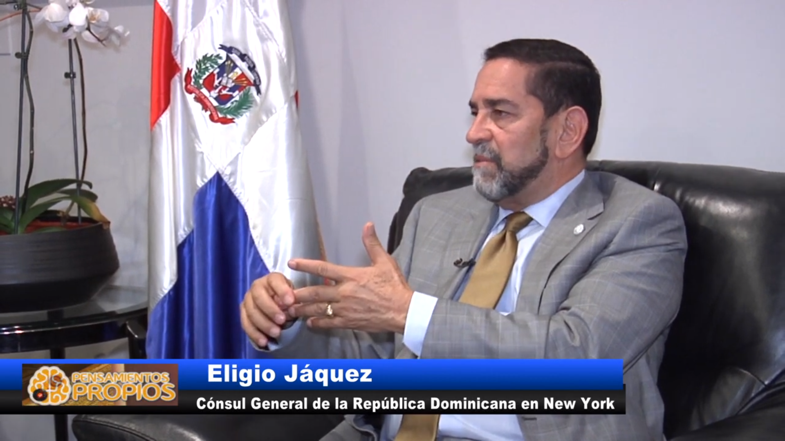
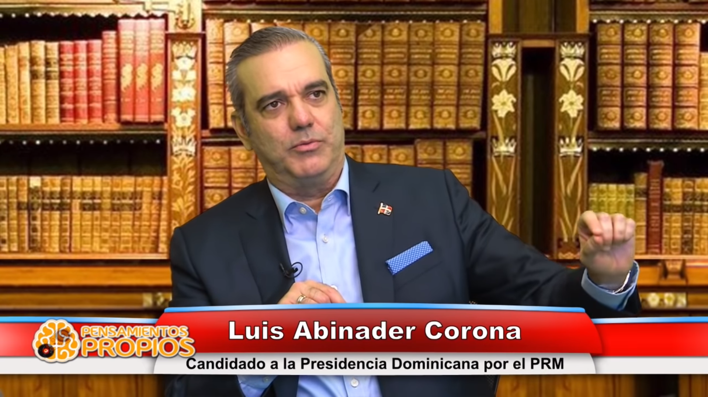
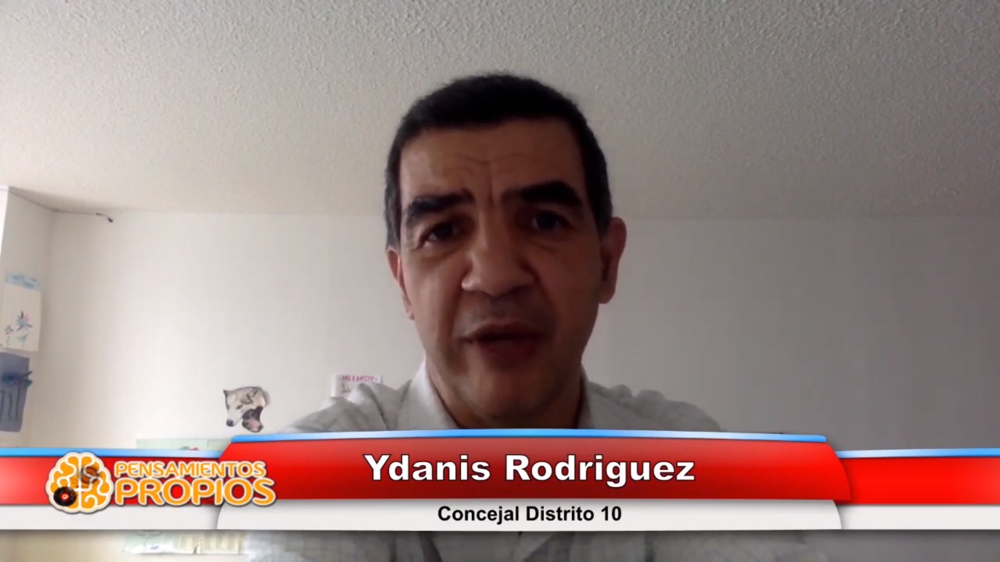

Consulado RD en NY
El Ing. Eligio Jaquez nos cuenta como es que
"..la compenetracion con la comunidad ha facilitado el trabajo.."

Candidato Presidencia RD
El Lic. Luis Abinader nos explica como pretende
"cambiar de un circulo vicioso del subdesarrollo a uno virtuoso .."
Ex-Vicepresidenta de la RD
La Dra. Milagros Ortiz nos dice lo que le falta a RD.
"el ejercicio de la ciudadania es cumplir con las leyes .."

Candidato Camara de Representantes
El Profesor y Consejal Ydanis Rodriguez nos dice lo que NY necesita:
"..un seguro universal de salud que lo tomen todos los doctores.. ..no un acceso de 3ra categoria.."